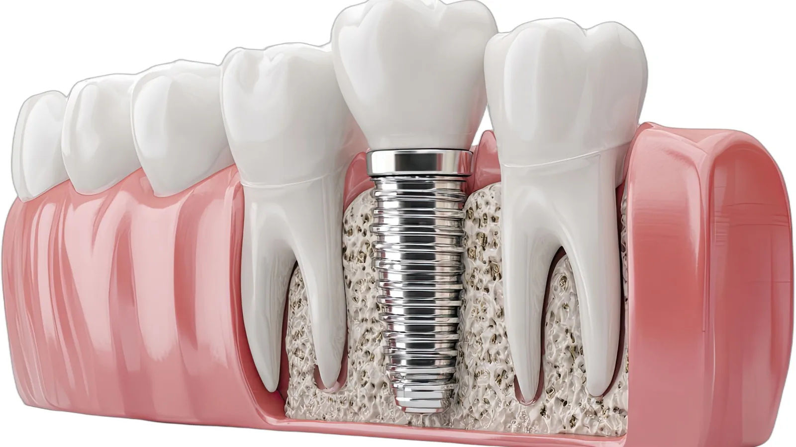

Dental Implants
Replacing one tooth without touching the others.
A single dental implant replaces one missing tooth from the root up. A small titanium post is placed into the jawbone, the bone fuses to it over several months, and a crown is then attached on top.
Its main advantage over a bridge is what it leaves alone. A bridge requires the teeth either side of the gap to be crowned, which means permanently removing enamel from teeth that may be perfectly healthy. An implant stands on its own and does not involve its neighbours at all.
It also preserves the bone. When a tooth is lost, the bone that supported it gradually resorbs because nothing is loading it. An implant transmits force into the bone in a way that helps maintain it.

Placed and restored here
Dr Meg both places implants and makes the crown that goes on top. In many practices those stages are split between a surgeon and a general dentist, with a handover in between. Keeping it together means the implant is positioned from the outset with the finished crown in mind, and one clinician is accountable for the result.
She has undertaken extensive implant training, including a six-day implant immersion intensive and advanced work in bone augmentation and flap surgery, and has placed and restored implants throughout her regional career.
Dr Meg is a general dentist and is not registered as a specialist in implant dentistry.
Assessment comes first
Not everyone is a candidate, and that assessment is done honestly.
Dr Meg examines the site, the gum health, the opposing tooth and your bite, then takes 3D CBCT imaging to assess bone volume and locate the nerve and sinus. Your medical history matters too — diabetes control, medications including bone medications, smoking and grinding all affect how an implant is likely to perform.
Where there is not enough bone, grafting may be able to build the site up first. Where an implant is not a sensible option, she will say so and go through the alternatives.
The implant system
We use [IMPLANT BRAND — PENDING CLIENT SIGN-OFF] implant systems, manufactured in Switzerland. It is a long-established system with a substantial published research base and readily available components, which matters years down the track if anything ever needs servicing.
The process
Placement is done under local anaesthetic and generally takes around an hour. The implant is placed into prepared bone and the site closed. Healing follows over several months while the bone fuses to the implant, and you are not left with a visible gap in the meantime where the tooth shows.
Once healing is confirmed, a digital scan is taken and the crown made by a dental laboratory, then fitted and adjusted.
Frequently asked questions
Typically several months from placement to the final crown, because bone fusion cannot be rushed. Grafting adds further time. You will be given an expected timeline at your planning appointment.
It is done under local anaesthetic and many people describe it as more manageable than they anticipated. There is usually soreness and some swelling for a few days afterwards. No dentist can promise a completely pain-free procedure.
Outcomes vary considerably with bone quality, gum health, smoking, grinding, general health and maintenance. Implants are a long-term option but not a guaranteed permanent one, and it would be misleading to quote you a figure. Dr Meg will discuss what is realistic in your case.
Smoking increases the risk of implant failure and of problems with healing. It does not automatically rule you out, but it is a genuine factor and will be discussed frankly.
Bone grafting can often build the site up sufficiently. Whether that is possible depends on how much bone is missing and where.
Much like a natural tooth — brushing, cleaning between the teeth, and regular check-ups. The gum around an implant can become inflamed and bone can be lost if it is neglected, so maintenance is not optional.